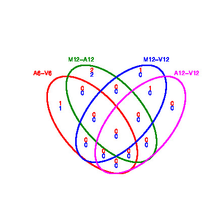

RNA-Seq Workflow Template
19 minute read
Introduction
Users want to provide here background information about the design of their ChIP-Seq project.
Background and objectives
This report describes the analysis of several ChIP-Seq experiments studying the DNA binding patterns of the transcriptions factors … from organism ….
Experimental design
Typically, users want to specify here all information relevant for the analysis of their NGS study. This includes detailed descriptions of FASTQ files, experimental design, reference genome, gene annotations, etc.
Note: the mini sample FASTQ files (toy data set) used by this report as well as the associated reference genome files
are loaded below via the genWorkenvir function from the systemPipeRdata package.
The chosen data set SRP010938
contains 18 paired-end (PE) read sets from Arabidposis thaliana
(Howard et al. 2013). To minimize processing time during testing, each FASTQ
file has been subsetted to 90,000-100,000 randomly sampled PE reads that
map to the first 100,000 nucleotides of each chromosome of the A.
thalina genome. The corresponding reference genome sequence (FASTA) and
its GFF annotation files have been truncated accordingly. This way the entire
test sample data set is less than 200MB in storage space. A PE read set has been
chosen for this test data set for flexibility, because it can be used for testing both types
of analysis routines requiring either SE (single end) reads or PE reads.
Workflow environment
NOTE: this section describes how to set up the proper environment (directory structure) for running
systemPipeR workflows. After mastering this task the workflow run instructions can be deleted since they are not expected
to be included in a final HTML/PDF report of a workflow.
-
If a remote system or cluster is used, then users need to log in to the remote system first. The following applies to an HPC cluster (e.g. HPCC cluster).
A terminal application needs to be used to log in to a user’s cluster account. Next, one can open an interactive session on a computer node with
srun. More details about argument settings forsrunare available in this HPCC manual or the HPCC section of this website here. Next, load the R version required for running the workflow withmodule load. Sometimes it may be necessary to first unload an active software version before loading another version, e.g.module unload R.
srun --x11 --partition=short --mem=2gb --cpus-per-task 4 --ntasks 1 --time 2:00:00 --pty bash -l
module load R/4.0.3
- Load a workflow template with the
genWorkenvirfunction. This can be done from the command-line or from within R. However, only one of the two options needs to be used.
From command-line
$ Rscript -e "systemPipeRdata::genWorkenvir(workflow='chipseq')"
$ cd chipseq
From R
library(systemPipeRdata)
genWorkenvir(workflow = "chipseq")
setwd("chipseq")
-
Optional: if the user wishes to use another
Rmdfile than the template instance provided by thegenWorkenvirfunction, then it can be copied or downloaded into the root directory of the workflow environment (e.g. withcporwget). -
Now one can open from the root directory of the workflow the corresponding R Markdown script (e.g. systemPipeChIPseq.Rmd) using an R IDE, such as nvim-r, ESS or RStudio. Subsequently, the workflow can be run as outlined below. For learning purposes it is recommended to run workflows for the first time interactively. Once all workflow steps are understood and possibly modified to custom needs, one can run the workflow from start to finish with a single command using
rmarkdown::render()orrunWF().
Required packages and resources
The systemPipeR package needs to be loaded to perform the analysis steps shown in
this report (H Backman and Girke 2016).
library(systemPipeR)
To apply workflows to custom data, the user needs to modify the targets file and if
necessary update the corresponding parameter (.cwl and .yml) files.
A collection of pre-generated .cwl and .yml files are provided in the param/cwl subdirectory
of each workflow template. They are also viewable in the GitHub repository of systemPipeRdata (see
here).
For more information of the structure of the targets file, please consult the documentation
here. More details about the new parameter files from systemPipeR can be found here.
Experiment definition provided by targets file
The targets file defines all FASTQ files and sample
comparisons of the analysis workflow.
targetspath <- system.file("extdata", "targetsPE.txt", package = "systemPipeR")
targets <- read.delim(targetspath, comment.char = "#")[, 1:4]
targets
## FileName1 FileName2
## 1 ./data/SRR446027_1.fastq.gz ./data/SRR446027_2.fastq.gz
## 2 ./data/SRR446028_1.fastq.gz ./data/SRR446028_2.fastq.gz
## 3 ./data/SRR446029_1.fastq.gz ./data/SRR446029_2.fastq.gz
## 4 ./data/SRR446030_1.fastq.gz ./data/SRR446030_2.fastq.gz
## 5 ./data/SRR446031_1.fastq.gz ./data/SRR446031_2.fastq.gz
## 6 ./data/SRR446032_1.fastq.gz ./data/SRR446032_2.fastq.gz
## 7 ./data/SRR446033_1.fastq.gz ./data/SRR446033_2.fastq.gz
## 8 ./data/SRR446034_1.fastq.gz ./data/SRR446034_2.fastq.gz
## 9 ./data/SRR446035_1.fastq.gz ./data/SRR446035_2.fastq.gz
## 10 ./data/SRR446036_1.fastq.gz ./data/SRR446036_2.fastq.gz
## 11 ./data/SRR446037_1.fastq.gz ./data/SRR446037_2.fastq.gz
## 12 ./data/SRR446038_1.fastq.gz ./data/SRR446038_2.fastq.gz
## 13 ./data/SRR446039_1.fastq.gz ./data/SRR446039_2.fastq.gz
## 14 ./data/SRR446040_1.fastq.gz ./data/SRR446040_2.fastq.gz
## 15 ./data/SRR446041_1.fastq.gz ./data/SRR446041_2.fastq.gz
## 16 ./data/SRR446042_1.fastq.gz ./data/SRR446042_2.fastq.gz
## 17 ./data/SRR446043_1.fastq.gz ./data/SRR446043_2.fastq.gz
## 18 ./data/SRR446044_1.fastq.gz ./data/SRR446044_2.fastq.gz
## SampleName Factor
## 1 M1A M1
## 2 M1B M1
## 3 A1A A1
## 4 A1B A1
## 5 V1A V1
## 6 V1B V1
## 7 M6A M6
## 8 M6B M6
## 9 A6A A6
## 10 A6B A6
## 11 V6A V6
## 12 V6B V6
## 13 M12A M12
## 14 M12B M12
## 15 A12A A12
## 16 A12B A12
## 17 V12A V12
## 18 V12B V12
Read preprocessing
Read quality filtering and trimming
The function preprocessReads allows to apply predefined or custom
read preprocessing functions to all FASTQ files referenced in a
SYSargs2 container, such as quality filtering or adapter trimming
routines. The paths to the resulting output FASTQ files are stored in the
output slot of the SYSargs2 object. The following example performs adapter trimming with
the trimLRPatterns function from the Biostrings package.
After the trimming step a new targets file is generated (here
targets_trim.txt) containing the paths to the trimmed FASTQ files.
The new targets file can be used for the next workflow step with an updated
SYSargs2 instance, e.g. running the NGS alignments using the
trimmed FASTQ files.
Construct SYSargs2 object from cwl and yml param and targets files.
dir_path <- system.file("extdata/cwl/preprocessReads/trim-pe",
package = "systemPipeR")
trim <- loadWorkflow(targets = targetspath, wf_file = "trim-pe.cwl",
input_file = "trim-pe.yml", dir_path = dir_path)
trim <- renderWF(trim, inputvars = c(FileName1 = "_FASTQ_PATH1_",
FileName2 = "_FASTQ_PATH2_", SampleName = "_SampleName_"))
trim
output(trim)[1:2]
preprocessReads(args = trim, Fct = "trimLRPatterns(Rpattern='GCCCGGGTAA',
subject=fq)",
batchsize = 1e+05, overwrite = TRUE, compress = TRUE)
writeTargetsout(x = trim, file = "targets_trim.txt", step = 1,
new_col = c("FileName1", "FileName2"), new_col_output_index = c(1,
2), overwrite = TRUE)
FASTQ quality report
The following seeFastq and seeFastqPlot functions generate and plot a series of useful
quality statistics for a set of FASTQ files including per cycle quality box
plots, base proportions, base-level quality trends, relative k-mer
diversity, length and occurrence distribution of reads, number of reads
above quality cutoffs and mean quality distribution. The results are
written to a PDF file named fastqReport.pdf.
fqlist <- seeFastq(fastq = infile1(trim), batchsize = 10000,
klength = 8)
pdf("./results/fastqReport.pdf", height = 18, width = 4 * length(fqlist))
seeFastqPlot(fqlist)
dev.off()

Figure 1: FASTQ quality report for 18 samples
Alignments
Read mapping with HISAT2
The following steps will demonstrate how to use the short read aligner Hisat2
(Kim, Langmead, and Salzberg 2015) in both interactive job submissions and batch submissions to
queuing systems of clusters using the systemPipeR's new CWL command-line interface.
Build Hisat2 index.
dir_path <- system.file("extdata/cwl/hisat2/hisat2-idx", package = "systemPipeR")
idx <- loadWorkflow(targets = NULL, wf_file = "hisat2-index.cwl",
input_file = "hisat2-index.yml", dir_path = dir_path)
idx <- renderWF(idx)
idx
cmdlist(idx)
### Run
runCommandline(idx, make_bam = FALSE)
The parameter settings of the aligner are defined in the hisat2-mapping-se.cwl
and hisat2-mapping-se.yml files. The following shows how to construct the
corresponding SYSargs2 object, here args.
dir_path <- system.file("extdata/cwl/hisat2/hisat2-pe", package = "systemPipeR")
args <- loadWorkflow(targets = targetspath, wf_file = "hisat2-mapping-pe.cwl",
input_file = "hisat2-mapping-pe.yml", dir_path = dir_path)
args <- renderWF(args, inputvars = c(FileName1 = "_FASTQ_PATH1_",
FileName2 = "_FASTQ_PATH2_", SampleName = "_SampleName_"))
args
## Instance of 'SYSargs2':
## Slot names/accessors:
## targets: 18 (M1A...V12B), targetsheader: 4 (lines)
## modules: 1
## wf: 0, clt: 1, yamlinput: 8 (components)
## input: 18, output: 18
## cmdlist: 18
## WF Steps:
## 1. hisat2-mapping-pe (rendered: TRUE)
cmdlist(args)[1:2]
## $M1A
## $M1A$`hisat2-mapping-pe`
## [1] "hisat2 -S ./results/M1A.sam -x ./data/tair10.fasta -k 1 --min-intronlen 30 --max-intronlen 3000 -1 ./data/SRR446027_1.fastq.gz -2 ./data/SRR446027_2.fastq.gz --threads 4"
##
##
## $M1B
## $M1B$`hisat2-mapping-pe`
## [1] "hisat2 -S ./results/M1B.sam -x ./data/tair10.fasta -k 1 --min-intronlen 30 --max-intronlen 3000 -1 ./data/SRR446028_1.fastq.gz -2 ./data/SRR446028_2.fastq.gz --threads 4"
output(args)[1:2]
## $M1A
## $M1A$`hisat2-mapping-pe`
## [1] "./results/M1A.sam"
##
##
## $M1B
## $M1B$`hisat2-mapping-pe`
## [1] "./results/M1B.sam"
Interactive job submissions in a single machine
To simplify the short read alignment execution for the user, the command-line
can be run with the runCommandline function.
The execution will be on a single machine without submitting to a queuing system
of a computer cluster. This way, the input FASTQ files will be processed sequentially.
By default runCommandline auto detects SAM file outputs and converts them
to sorted and indexed BAM files, using internally the Rsamtools package. Besides, runCommandline allows the user to create a dedicated
results folder for each workflow and a sub-folder for each sample
defined in the targets file. This includes all the output and log files for each
step. When these options are used, the output location will be updated by default
and can be assigned to the same object.
### Run single Machine
args <- runCommandline(args)
Parallelization on clusters
Alternatively, the computation can be greatly accelerated by processing many files
in parallel using several compute nodes of a cluster, where a scheduling/queuing
system is used for load balancing. For this the clusterRun function submits
the computing requests to the scheduler using the run specifications
defined by runCommandline.
To avoid over-subscription of CPU cores on the compute nodes, the value from
yamlinput(args)['thread'] is passed on to the submission command, here ncpus
in the resources list object. The number of independent parallel cluster
processes is defined under the Njobs argument. The following example will run
18 processes in parallel using for each 4 CPU cores. If the resources available
on a cluster allow running all 18 processes at the same time then the shown sample
submission will utilize in total 72 CPU cores. Note, clusterRun can be used
with most queueing systems as it is based on utilities from the batchtools
package which supports the use of template files (*.tmpl) for defining the
run parameters of different schedulers. To run the following code, one needs to
have both a conf file (see .batchtools.conf.R samples here)
and a template file (see *.tmpl samples here)
for the queueing available on a system. The following example uses the sample
conf and template files for the Slurm scheduler provided by this package.
library(batchtools)
resources <- list(walltime = 120, ntasks = 1, ncpus = 4, memory = 1024)
reg <- clusterRun(args, FUN = runCommandline, more.args = list(args = args,
make_bam = TRUE, dir = FALSE), conffile = ".batchtools.conf.R",
template = "batchtools.slurm.tmpl", Njobs = 18, runid = "01",
resourceList = resources)
getStatus(reg = reg)
waitForJobs(reg = reg)
args <- output_update(args, dir = FALSE, replace = TRUE, extension = c(".sam",
".bam")) ## Updates the output(args) to the right location in the subfolders
output(args)
Check whether all BAM files have been created.
outpaths <- subsetWF(args, slot = "output", subset = 1, index = 1)
file.exists(outpaths)
Read and alignment stats
The following provides an overview of the number of reads in each sample and how many of them aligned to the reference.
read_statsDF <- alignStats(args = args)
write.table(read_statsDF, "results/alignStats.xls", row.names = FALSE,
quote = FALSE, sep = "\t")
The following shows the alignment statistics for a sample file provided by the systemPipeR package.
read.table(system.file("extdata", "alignStats.xls", package = "systemPipeR"),
header = TRUE)[1:4, ]
## FileName Nreads2x Nalign Perc_Aligned Nalign_Primary
## 1 M1A 192918 177961 92.24697 177961
## 2 M1B 197484 159378 80.70426 159378
## 3 A1A 189870 176055 92.72397 176055
## 4 A1B 188854 147768 78.24457 147768
## Perc_Aligned_Primary
## 1 92.24697
## 2 80.70426
## 3 92.72397
## 4 78.24457
Create symbolic links for viewing BAM files in IGV
The symLink2bam function creates symbolic links to view the BAM alignment files in a
genome browser such as IGV. The corresponding URLs are written to a file
with a path specified under urlfile in the results directory.
symLink2bam(sysargs = args, htmldir = c("~/.html/", "somedir/"),
urlbase = "http://cluster.hpcc.ucr.edu/~tgirke/", urlfile = "./results/IGVurl.txt")
Read quantification
Read counting with summarizeOverlaps in parallel mode using multiple cores
Reads overlapping with annotation ranges of interest are counted for
each sample using the summarizeOverlaps function (Lawrence et al. 2013). The read counting is
preformed for exonic gene regions in a non-strand-specific manner while
ignoring overlaps among different genes. Subsequently, the expression
count values are normalized by reads per kp per million mapped reads
(RPKM). The raw read count table (countDFeByg.xls) and the corresponding
RPKM table (rpkmDFeByg.xls) are written to separate files in the directory of this project. Parallelization is achieved with the BiocParallel package, here using 8 CPU cores.
library("GenomicFeatures")
library(BiocParallel)
txdb <- makeTxDbFromGFF(file = "data/tair10.gff", format = "gff",
dataSource = "TAIR", organism = "Arabidopsis thaliana")
saveDb(txdb, file = "./data/tair10.sqlite")
txdb <- loadDb("./data/tair10.sqlite")
outpaths <- subsetWF(args, slot = "output", subset = 1, index = 1)
(align <- readGAlignments(outpaths[1])) # Demonstrates how to read bam file into R
eByg <- exonsBy(txdb, by = c("gene"))
bfl <- BamFileList(outpaths, yieldSize = 50000, index = character())
multicoreParam <- MulticoreParam(workers = 2)
register(multicoreParam)
registered()
counteByg <- bplapply(bfl, function(x) summarizeOverlaps(eByg,
x, mode = "Union", ignore.strand = TRUE, inter.feature = FALSE,
singleEnd = TRUE))
countDFeByg <- sapply(seq(along = counteByg), function(x) assays(counteByg[[x]])$counts)
rownames(countDFeByg) <- names(rowRanges(counteByg[[1]]))
colnames(countDFeByg) <- names(bfl)
rpkmDFeByg <- apply(countDFeByg, 2, function(x) returnRPKM(counts = x,
ranges = eByg))
write.table(countDFeByg, "results/countDFeByg.xls", col.names = NA,
quote = FALSE, sep = "\t")
write.table(rpkmDFeByg, "results/rpkmDFeByg.xls", col.names = NA,
quote = FALSE, sep = "\t")
Sample of data slice of count table
read.delim("results/countDFeByg.xls", row.names = 1, check.names = FALSE)[1:4,
1:5]
Sample of data slice of RPKM table
read.delim("results/rpkmDFeByg.xls", row.names = 1, check.names = FALSE)[1:4,
1:4]
Note, for most statistical differential expression or abundance analysis
methods, such as edgeR or DESeq2, the raw count values should be used as input. The
usage of RPKM values should be restricted to specialty applications
required by some users, e.g. manually comparing the expression levels
among different genes or features.
Sample-wise correlation analysis
The following computes the sample-wise Spearman correlation coefficients from
the rlog transformed expression values generated with the DESeq2 package. After
transformation to a distance matrix, hierarchical clustering is performed with
the hclust function and the result is plotted as a dendrogram
(also see file sample_tree.pdf).
library(DESeq2, quietly = TRUE)
library(ape, warn.conflicts = FALSE)
countDF <- as.matrix(read.table("./results/countDFeByg.xls"))
colData <- data.frame(row.names = targets.as.df(targets(args))$SampleName,
condition = targets.as.df(targets(args))$Factor)
dds <- DESeqDataSetFromMatrix(countData = countDF, colData = colData,
design = ~condition)
d <- cor(assay(rlog(dds)), method = "spearman")
hc <- hclust(dist(1 - d))
pdf("results/sample_tree.pdf")
plot.phylo(as.phylo(hc), type = "p", edge.col = "blue", edge.width = 2,
show.node.label = TRUE, no.margin = TRUE)
dev.off()

Figure 2: Correlation dendrogram of samples
Analysis of DEGs
The analysis of differentially expressed genes (DEGs) is performed with
the glm method of the edgeR package (Robinson, McCarthy, and Smyth 2010). The sample
comparisons used by this analysis are defined in the header lines of the
targets.txt file starting with <CMP>.
Run edgeR
library(edgeR)
countDF <- read.delim("results/countDFeByg.xls", row.names = 1,
check.names = FALSE)
targets <- read.delim("targetsPE.txt", comment = "#")
cmp <- readComp(file = "targetsPE.txt", format = "matrix", delim = "-")
edgeDF <- run_edgeR(countDF = countDF, targets = targets, cmp = cmp[[1]],
independent = FALSE, mdsplot = "")
Add gene descriptions
library("biomaRt")
m <- useMart("plants_mart", dataset = "athaliana_eg_gene", host = "plants.ensembl.org")
desc <- getBM(attributes = c("tair_locus", "description"), mart = m)
desc <- desc[!duplicated(desc[, 1]), ]
descv <- as.character(desc[, 2])
names(descv) <- as.character(desc[, 1])
edgeDF <- data.frame(edgeDF, Desc = descv[rownames(edgeDF)],
check.names = FALSE)
write.table(edgeDF, "./results/edgeRglm_allcomp.xls", quote = FALSE,
sep = "\t", col.names = NA)
Plot DEG results
Filter and plot DEG results for up and down regulated genes. The
definition of up and down is given in the corresponding help
file. To open it, type ?filterDEGs in the R console.
edgeDF <- read.delim("results/edgeRglm_allcomp.xls", row.names = 1,
check.names = FALSE)
pdf("results/DEGcounts.pdf")
DEG_list <- filterDEGs(degDF = edgeDF, filter = c(Fold = 2, FDR = 20))
dev.off()
write.table(DEG_list$Summary, "./results/DEGcounts.xls", quote = FALSE,
sep = "\t", row.names = FALSE)

Figure 3: Up and down regulated DEGs with FDR of 1%
Venn diagrams of DEG sets
The overLapper function can compute Venn intersects for large numbers of sample
sets (up to 20 or more) and plots 2-5 way Venn diagrams. A useful
feature is the possibility to combine the counts from several Venn
comparisons with the same number of sample sets in a single Venn diagram
(here for 4 up and down DEG sets).
vennsetup <- overLapper(DEG_list$Up[6:9], type = "vennsets")
vennsetdown <- overLapper(DEG_list$Down[6:9], type = "vennsets")
pdf("results/vennplot.pdf")
vennPlot(list(vennsetup, vennsetdown), mymain = "", mysub = "",
colmode = 2, ccol = c("blue", "red"))
dev.off()

Figure 4: Venn Diagram for 4 Up and Down DEG Sets
GO term enrichment analysis
Obtain gene-to-GO mappings
The following shows how to obtain gene-to-GO mappings from biomaRt (here for A.
thaliana) and how to organize them for the downstream GO term
enrichment analysis. Alternatively, the gene-to-GO mappings can be
obtained for many organisms from Bioconductor’s *.db genome annotation
packages or GO annotation files provided by various genome databases.
For each annotation this relatively slow preprocessing step needs to be
performed only once. Subsequently, the preprocessed data can be loaded
with the load function as shown in the next subsection.
library("biomaRt")
listMarts() # To choose BioMart database
listMarts(host = "plants.ensembl.org")
m <- useMart("plants_mart", host = "plants.ensembl.org")
listDatasets(m)
m <- useMart("plants_mart", dataset = "athaliana_eg_gene", host = "plants.ensembl.org")
listAttributes(m) # Choose data types you want to download
go <- getBM(attributes = c("go_id", "tair_locus", "namespace_1003"),
mart = m)
go <- go[go[, 3] != "", ]
go[, 3] <- as.character(go[, 3])
go[go[, 3] == "molecular_function", 3] <- "F"
go[go[, 3] == "biological_process", 3] <- "P"
go[go[, 3] == "cellular_component", 3] <- "C"
go[1:4, ]
dir.create("./data/GO")
write.table(go, "data/GO/GOannotationsBiomart_mod.txt", quote = FALSE,
row.names = FALSE, col.names = FALSE, sep = "\t")
catdb <- makeCATdb(myfile = "data/GO/GOannotationsBiomart_mod.txt",
lib = NULL, org = "", colno = c(1, 2, 3), idconv = NULL)
save(catdb, file = "data/GO/catdb.RData")
Batch GO term enrichment analysis
Apply the enrichment analysis to the DEG sets obtained the above differential
expression analysis. Note, in the following example the FDR filter is set
here to an unreasonably high value, simply because of the small size of the toy
data set used in this vignette. Batch enrichment analysis of many gene sets is
performed with the function. When method=all, it returns all GO terms passing
the p-value cutoff specified under the cutoff arguments. When method=slim,
it returns only the GO terms specified under the myslimv argument. The given
example shows how a GO slim vector for a specific organism can be obtained from
BioMart.
library("biomaRt")
load("data/GO/catdb.RData")
DEG_list <- filterDEGs(degDF = edgeDF, filter = c(Fold = 2, FDR = 50),
plot = FALSE)
up_down <- DEG_list$UporDown
names(up_down) <- paste(names(up_down), "_up_down", sep = "")
up <- DEG_list$Up
names(up) <- paste(names(up), "_up", sep = "")
down <- DEG_list$Down
names(down) <- paste(names(down), "_down", sep = "")
DEGlist <- c(up_down, up, down)
DEGlist <- DEGlist[sapply(DEGlist, length) > 0]
BatchResult <- GOCluster_Report(catdb = catdb, setlist = DEGlist,
method = "all", id_type = "gene", CLSZ = 2, cutoff = 0.9,
gocats = c("MF", "BP", "CC"), recordSpecGO = NULL)
library("biomaRt")
m <- useMart("plants_mart", dataset = "athaliana_eg_gene", host = "plants.ensembl.org")
goslimvec <- as.character(getBM(attributes = c("goslim_goa_accession"),
mart = m)[, 1])
BatchResultslim <- GOCluster_Report(catdb = catdb, setlist = DEGlist,
method = "slim", id_type = "gene", myslimv = goslimvec, CLSZ = 10,
cutoff = 0.01, gocats = c("MF", "BP", "CC"), recordSpecGO = NULL)
Plot batch GO term results
The data.frame generated by GOCluster can be plotted with the goBarplot function. Because of the
variable size of the sample sets, it may not always be desirable to show
the results from different DEG sets in the same bar plot. Plotting
single sample sets is achieved by subsetting the input data frame as
shown in the first line of the following example.
gos <- BatchResultslim[grep("M6-V6_up_down", BatchResultslim$CLID),
]
gos <- BatchResultslim
pdf("GOslimbarplotMF.pdf", height = 8, width = 10)
goBarplot(gos, gocat = "MF")
dev.off()
goBarplot(gos, gocat = "BP")
goBarplot(gos, gocat = "CC")

Figure 5: GO Slim Barplot for MF Ontology
Clustering and heat maps
The following example performs hierarchical clustering on the rlog
transformed expression matrix subsetted by the DEGs identified in the above
differential expression analysis. It uses a Pearson correlation-based distance
measure and complete linkage for cluster joining.
library(pheatmap)
geneids <- unique(as.character(unlist(DEG_list[[1]])))
y <- assay(rlog(dds))[geneids, ]
pdf("heatmap1.pdf")
pheatmap(y, scale = "row", clustering_distance_rows = "correlation",
clustering_distance_cols = "correlation")
dev.off()

Figure 6: Heat Map with Hierarchical Clustering Dendrograms of DEGs
Version Information
sessionInfo()
## R version 4.0.5 (2021-03-31)
## Platform: x86_64-pc-linux-gnu (64-bit)
## Running under: Debian GNU/Linux 10 (buster)
##
## Matrix products: default
## BLAS: /usr/lib/x86_64-linux-gnu/blas/libblas.so.3.8.0
## LAPACK: /usr/lib/x86_64-linux-gnu/lapack/liblapack.so.3.8.0
##
## locale:
## [1] LC_CTYPE=en_US.UTF-8 LC_NUMERIC=C
## [3] LC_TIME=en_US.UTF-8 LC_COLLATE=en_US.UTF-8
## [5] LC_MONETARY=en_US.UTF-8 LC_MESSAGES=en_US.UTF-8
## [7] LC_PAPER=en_US.UTF-8 LC_NAME=C
## [9] LC_ADDRESS=C LC_TELEPHONE=C
## [11] LC_MEASUREMENT=en_US.UTF-8 LC_IDENTIFICATION=C
##
## attached base packages:
## [1] stats4 parallel stats graphics grDevices
## [6] utils datasets methods base
##
## other attached packages:
## [1] batchtools_0.9.14 ape_5.4-1
## [3] ggplot2_3.3.2 systemPipeR_1.24.5
## [5] ShortRead_1.48.0 GenomicAlignments_1.26.0
## [7] SummarizedExperiment_1.20.0 Biobase_2.50.0
## [9] MatrixGenerics_1.2.0 matrixStats_0.57.0
## [11] BiocParallel_1.24.1 Rsamtools_2.6.0
## [13] Biostrings_2.58.0 XVector_0.30.0
## [15] GenomicRanges_1.42.0 GenomeInfoDb_1.26.1
## [17] IRanges_2.24.0 S4Vectors_0.28.0
## [19] BiocGenerics_0.36.0 BiocStyle_2.18.0
##
## loaded via a namespace (and not attached):
## [1] colorspace_2.0-0 rjson_0.2.20
## [3] hwriter_1.3.2 ellipsis_0.3.1
## [5] bit64_4.0.5 AnnotationDbi_1.52.0
## [7] xml2_1.3.2 codetools_0.2-18
## [9] splines_4.0.5 knitr_1.30
## [11] jsonlite_1.7.1 annotate_1.68.0
## [13] GO.db_3.12.1 dbplyr_2.0.0
## [15] png_0.1-7 pheatmap_1.0.12
## [17] graph_1.68.0 BiocManager_1.30.10
## [19] compiler_4.0.5 httr_1.4.2
## [21] backports_1.2.0 GOstats_2.56.0
## [23] assertthat_0.2.1 Matrix_1.3-2
## [25] limma_3.46.0 formatR_1.7
## [27] htmltools_0.5.1.1 prettyunits_1.1.1
## [29] tools_4.0.5 gtable_0.3.0
## [31] glue_1.4.2 GenomeInfoDbData_1.2.4
## [33] Category_2.56.0 dplyr_1.0.2
## [35] rsvg_2.1 rappdirs_0.3.1
## [37] V8_3.4.0 Rcpp_1.0.5
## [39] jquerylib_0.1.3 vctrs_0.3.5
## [41] nlme_3.1-149 blogdown_1.2
## [43] rtracklayer_1.50.0 xfun_0.22
## [45] stringr_1.4.0 lifecycle_0.2.0
## [47] XML_3.99-0.5 edgeR_3.32.0
## [49] zlibbioc_1.36.0 scales_1.1.1
## [51] BSgenome_1.58.0 VariantAnnotation_1.36.0
## [53] hms_0.5.3 RBGL_1.66.0
## [55] RColorBrewer_1.1-2 yaml_2.2.1
## [57] curl_4.3 memoise_1.1.0
## [59] sass_0.3.1 biomaRt_2.46.0
## [61] latticeExtra_0.6-29 stringi_1.5.3
## [63] RSQLite_2.2.1 genefilter_1.72.0
## [65] checkmate_2.0.0 GenomicFeatures_1.42.1
## [67] DOT_0.1 rlang_0.4.8
## [69] pkgconfig_2.0.3 bitops_1.0-6
## [71] evaluate_0.14 lattice_0.20-41
## [73] purrr_0.3.4 bit_4.0.4
## [75] tidyselect_1.1.0 GSEABase_1.52.0
## [77] AnnotationForge_1.32.0 magrittr_2.0.1
## [79] bookdown_0.21 R6_2.5.0
## [81] generics_0.1.0 base64url_1.4
## [83] DelayedArray_0.16.0 DBI_1.1.0
## [85] withr_2.3.0 pillar_1.4.7
## [87] survival_3.2-10 RCurl_1.98-1.2
## [89] tibble_3.0.4 crayon_1.3.4
## [91] BiocFileCache_1.14.0 rmarkdown_2.7
## [93] jpeg_0.1-8.1 progress_1.2.2
## [95] locfit_1.5-9.4 grid_4.0.5
## [97] data.table_1.13.2 blob_1.2.1
## [99] Rgraphviz_2.34.0 digest_0.6.27
## [101] xtable_1.8-4 brew_1.0-6
## [103] openssl_1.4.3 munsell_0.5.0
## [105] bslib_0.2.4 askpass_1.1
Funding
This project is funded by NSF award ABI-1661152.
References
H Backman, Tyler W, and Thomas Girke. 2016. “systemPipeR: NGS workflow and report generation environment.” BMC Bioinformatics 17 (1): 388. https://doi.org/10.1186/s12859-016-1241-0.
Howard, Brian E, Qiwen Hu, Ahmet Can Babaoglu, Manan Chandra, Monica Borghi, Xiaoping Tan, Luyan He, et al. 2013. “High-Throughput RNA Sequencing of Pseudomonas-Infected Arabidopsis Reveals Hidden Transcriptome Complexity and Novel Splice Variants.” PLoS One 8 (10): e74183. https://doi.org/10.1371/journal.pone.0074183.
Kim, Daehwan, Ben Langmead, and Steven L Salzberg. 2015. “HISAT: A Fast Spliced Aligner with Low Memory Requirements.” Nat. Methods 12 (4): 357–60.
Lawrence, Michael, Wolfgang Huber, Hervé Pagès, Patrick Aboyoun, Marc Carlson, Robert Gentleman, Martin T Morgan, and Vincent J Carey. 2013. “Software for Computing and Annotating Genomic Ranges.” PLoS Comput. Biol. 9 (8): e1003118. https://doi.org/10.1371/journal.pcbi.1003118.
Robinson, M D, D J McCarthy, and G K Smyth. 2010. “edgeR: A Bioconductor Package for Differential Expression Analysis of Digital Gene Expression Data.” Bioinformatics 26 (1): 139–40. https://doi.org/10.1093/bioinformatics/btp616.